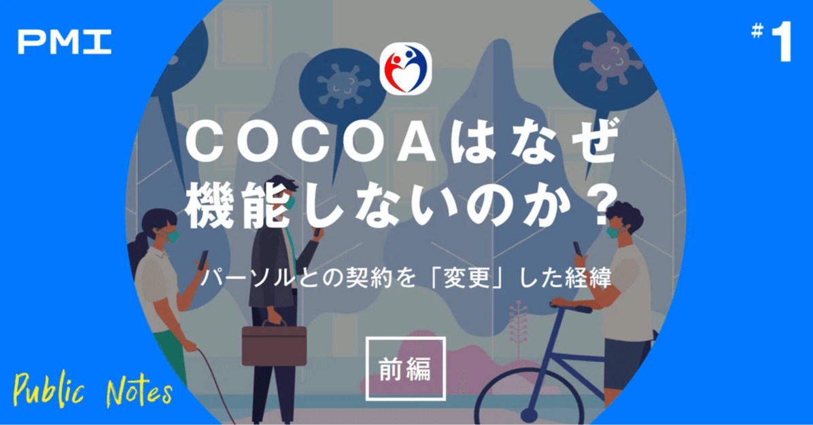

【Public Notes】とはミレニアル世代のシンクタンクPublicMeetsInnovationがイノベーターに知ってもらいたいイノベーションとルールメイキングに纏わる情報をお届けする記事です。
PublicMeetsInnovationでは、2020年7月13日オンラインイベント「NEW PUBLIC 〜ルールはつくれる、変えられる。イノベーションを社会実装するために 」を開催し、コロナの感染を抑える一つの手段として、COCOAをはじめとするテクノロジーの利活用の可能性を議論しました。
それから半年が経ち、感染抑制におけるCOCOAの効果について様々な議論がされている中、本稿では、改めてその政策決定プロセスと効果を検証するとともに、感染拡大抑制のためのテクノロジーの可能性と課題を考え今後のアップデートの方向性について考えていきたいと思います。
新型コロナウイルス接触確認アプリ（COCOA) が誕生してまもなく10か月を迎えようとしています。
当初は順調に増加していた登録者数ですが、年末あたりから鈍化傾向を迎え、最近では、濃厚接触があるにも関わらず通知されないという不具合が紙面を騒がすようになっていました。
https://www.47news.jp/5801807.html
一方、COCOAの不具合を伝える報道を見ても、多くはなぜそれが発生したのか分析しておらず、分析していたとしても「業者がサボっていた」「厚労省が忙しく回っていなかった」と体制面での不備を挙げる場合が多いように感じました。
もちろん、それも要因の一つだとは思いますが、本当にそれだけなのでしょうか。そこにはより本質的な「国がテクノロジーを活用すること」へのヒントが隠されているのではないでしょうか。
こうした疑問に答えるため、今回PMIは、医療、政策、テクノロジーそれぞれの分野に専門性を持つスタッフを集め、専門家等へのヒアリングを行い、独自にCOCOAの背後にある要因を探ろうと試みました。調査の結果浮かび上がってきたのは、テクノロジーの利点を行政が活かしきることができていなかったという構造上の欠点でした。長文になりますので、前編・中編・後編の三本立てでお送りします。
9月のデジタル庁発足に向けても、政府がテクノロジーをどう活用していくことができるかは、わが国の優先分野の一つです。この記事がよりよい行政運営に向けて、何か気づきを与えるものになれば幸いです。
COCOAの基礎知識
まずはごくごく簡単に、COCOAの基本情報に触れておきましょう。
COCOAは、新型コロナウイルスの拡大防止のため、昨年6月にリリースされたスマートフォン用アプリケーションです。
Bluetoothを活用することで他人との距離を測定し、陽性者と接触した可能性について通知を受けることができます。中国や韓国など一部の国で利用されているGPS方式を用いていないため、国などの機関が感染者を追跡することはできず、あくまで陽性者との接触が分かるという点で、プライバシーに配慮した仕組みだと言われています。
リリース当初は積極的な広報もあり順調に利用者を伸ばしていたCOCOAでしたが、年末近くからその勢いは鈍化し、かろうじて増加傾向にあるのが現状です（画像はこ厚生労働省HPより引用）。
ユニークな開発経緯
COCOAが最初に注目を浴びたのは、そのユニークな開発経緯でした。少し長くなりますが、大事な点なので丁寧にご説明したいと思います。
COCOAは最初、エンジニアたちが有志で立ち上げたオープンソースソフトウェア（OSS)「Covid19Radar」から始まっています。
オープンソースソフトウェアとは、通常は企業秘密として隠されているアプリのコードを公開することで、誰でも自由にアクセスできるようにしたもの（wikipediaをイメージしてもらうと分かりやすいかもしれません）。さまざまなエンジニアがコードを閲覧し変更することができるので、より多くの知恵を集めることができるというメリットがあります（画像はThinkitから引用）。
さて、有志が自主的に作り始めていたCovid19Raderでしたが、日本政府は日本政府で、ITを活用した感染拡大防止について議論を続けていました。
4月6日には第一回新型コロナウイルス感染症対策テックチームキックオフ会議が開催され、議題の一つとして「シンガポールのTrace Togetherアプリケーション日本版の実装検討」が挙げられています。この時点では政府も、アプリの開発が実現可能か、実現するとすればどのような形態になるのか、まだ手探り状態だったと思われます。
一方、実はこの時点で、Covid19Raderとは別に、もう一つ有志で開発を進めていた「まもりあいJapan」というアプリがありました。実際にはそれ以外にもいくつかあり、ベースとなるアプリが複数日本に存在するなかで議論が始まりました。ところが、ここで話をややこしくする事態が発生します。
それは、5月上旬、AndroidとiOSという二大スマホ用OSを開発するGoogleとAppleが、接触確認アプリについて方針を打ち出したということでした。
そこでは、
・個人情報に配慮して、GPSではなくBluetoothを活用すること
・アプリは各国に1アプリのみとすること
の大きく2点が求められていました。
ここで日本政府は二つの決断を迫られることになります。一つは、Bluetoothを使ったアプリに踏み切るということ、もう一つは、いずれのオープンソースソフトウェア（OSS）をベースにするかということでした。
Bluetoothの活用についての決断は早く、5月9日に開催された第一回接触確認アプリに関する有識者検討会合では、「技術的な安定性、アプリケーションの消費電力の節約等、ユーザーの利便性の観点から Apple、Google の提供する API を活用する前提で接触確認アプリの仕様を検討」するとされており、基本的にGoogle、AppleのAPIを活用することが決まっています。
「API（Application Programming Interface）」とは、アプリケーション同士を繋げるための「つなぎ」のようなものです。Apple、Googleという二大スマホ基盤がコロナ追跡アプリ用にAPIを用意するということは、そのAPIを使うことによって、それぞれの機種で最も効率よく濃厚接触の検出・追跡ができるアプリを開発できるということを意味しています。
また、その一週間後の5月17日に行われた第二回接触確認アプリに関する有識者検討会合では、より細かな仕様書等に関する議論が行われています。
ちなみに、少し古いですが昨年5月の記事によると、ほとんどの国はGoogle、Appleの条件通りBluetoothを活用することを前提にアプリを開発していたようであり、日本だけが特殊なわけではなかったと思われます。また、Google、Appleのシステムを採用しなかったシンガポールは、その後アプリを通じて収集されたデータが犯罪捜査に利用されるようになるなど、プライバシーにかかわる重大な懸念も指摘されています。Bluetoothはオンオフによって効果が出なくなってしまうという点が短所としてよく挙げられますが、こうした経緯を踏まえると、当時の判断はある程度合理的だったと言えるのではないでしょうか。
https://www.technologyreview.jp/s/230403/singapores-police-now-have-access-to-contact-tracing-data/
話を戻しましょう。
一方、ベースアプリはCovid19Raderが選ばれることになったわけですが、実はこの経緯はイマイチよく分かりません。少し時間が前後しますが、5月8日に開催された第三回新型コロナウイルス感染症対策テックチームキックオフ会議では、まもりあいJapanを開発するCode for Japanの関代表が登壇され、まもりあいJapanのプレゼンを行っています。
その後、有識者会議にOSSの関係者が出てきた形跡はないですが、むぐらさんが行った情報開示請求の中に、最終的に厚生労働省がCOCOA開発の委託契約を結ぶことになるパーソルプロセス＆テクノロジーとの間の「再委託変更申請書」（5月27日）があります。
これによると、Covid19Raderに有志が多くかかわっていた日本マイクロソフトが再委託先として名を連ねており、この時点でCovid19Raderがベースになることが公式に決定していたことが推測できます（一方、Covid19Raderの開発者はパーソルからの委託業務には携わっていないようです）。
どのような経緯でCovid19Raderが選ばれたかは以前から議論があるところですが、仕様書上どちらをベースにするかは特に明記されていないことを踏まえると、最終的なアプリ開発責任者である委託先（パーソル）との協議のうえ決定したと考えるのが妥当ではないかと思います。
複雑すぎる委託関係
さて、ここで勘の鋭い方はお気づきになられたかもしれません。
うえでパーソルプロセス＆テクノロジーとの間の「再委託変更申請書」と申し上げましたが、なぜ変更なのでしょうか。変更ということは、何かその前に別の契約があったのでしょうか。
実はその通り、COCOAの委託先として名を知られるようになったパーソルは、以前にとある契約を厚生労働省と結んでいました。それが新型コロナウイルス感染者等情報把握・管理支援システム（HERSYS）です。
HERSYSとは、保健所、自治体（保健所以外の部門）、医療機関、関係業務の受託者等の関係者の間での情報共有が即時に行えるように開発されたシステムで、迅速な情報共有と負担軽減のために作られました（画像は厚生労働省HPから引用）。
この開発を4月時点で受託していたのがパーソルなのです。
したがって、ここでいう変更とは、「もともとHERSYSを開発してもらうための契約」を「COCOAも一緒に作ってもらう契約」に変更したことを意味しており、結果以下３つの契約が登場します。
①HERSYSを開発してもらうための契約（4月）
②追加でCOCOAも作ってもらうための変更契約（5月27日）
③COCOAを作るために再委託することを委託元に許してもらうための再委託変更申請書（5月27日、上で出てきたものと同じ）
ちなみに、昨年6月26日の国会質疑における丸山穂高議員の質問主意書に対して政府は、（接触確認アプリの金額について）「令和二年七月までの間における開発、運用、保守等に係る経費は、九千四百六十万円」と答えていますが、これはまさに変更契約によって増額された金額と一致していました。ざっくりいうと以下の通りです。①HERSYSを開発してもらうための契約 1億9988万円②追加でCOCOAも作ってもらうための変更契約 2億9448万円差額 9460万円
①、②は契約本体、③は②に付随して提出された再委託先を追加するための申請書というイメージです。パーソルだけでCOCOAを開発することはできないと言うことで、③の申請を行った結果、新たにFIXER株式会社、日本マイクロソフトなどがパーソルから再委託先として指名されることになりました（以下は再委託変更申請書から抜粋、乙とはパーソルのことを指します）。
ようやく全体が見えてきましたが、ここで一つ疑問が沸いてきます。なぜ、厚労省はHERSYS発注先のパーソルにCOCOAもお願いしたかったのでしょうか。
ここには二つ理由があるのではないかと考えています。
第一は、COCOAとHERSYSを連動させることを政府が考えていたという事情です。こちらは上にも登場した5月8日開催の第三回新型コロナウイルス感染症対策テックチームキックオフ会議における資料ですが、COCOAとHERSYSの連動を明確に検討していることがうかがえます。
両者を連動させる以上、同じ委託先の方が効率的に開発することができると考えても不思議ではありません。
ちなみに、上記の通りもともとはHERSYSの連携を前提に考えられていたCOCOAですが、5月17日の第２回接触確認アプリに関する有識者検討会合では、有識者から「陽性者やその接触者との関係が特定されるおそれもあるため、慎重に検討すべき。」と指摘を受けるなど、慎重論も出てきたため、個人情報等の観点を踏まえて最終的に切り離されて運用されることになったようです。
第二の理由は、政府CIO補佐官の楠正憲さんがTwitterで指摘している通り、COCOAを担当していた厚労省結核感染症課が多忙で新規調達を立てられず、HERSYSの契約変更になったということです。
https://twitter.com/masanork/status/1358252376407220225?s=20
行政で調達を経験したことのある方ならお分かりになるかもしれませんが、新規調達というのはかなり時間と手間がかかるものです。
一般的に調達は、仕様書の作成→公示→入札→契約というフローをたどりますが、公示後一定期間開けないといけなかったり、入札に際しては（当然ながら）評価基準を決めないといけなかったり、とにかく大変です（画像はJICAHPから引用）。
そこで厚労省としては、そもそもCOCOAを一刻も早く開発しなければならないという事情があったこともあり、新規調達ではなく契約変更という形にしたものと思われます。
時系列がいったりきたりしてしまったので、最後に5月の一連の動きを整理しておきます。
前編はここまでです。
次回中編では、こうした突貫で進めた開発体制にひそんでいた落とし穴について、３つの視点から考えていきたいと思います。